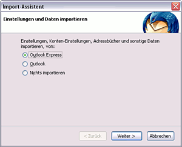

Outlook Express
Diese Anleitung beschreibt, wie man unter Windows mit Hilfe von Thunderbird die Outlook- oder Outlook-Express-Daten importieren kann. Dieser Schritt ist eine wichtige Voraussetzung, um später die vorhandenen Daten einfach unter Linux weiternutzen zu können. Thunderbird kann über die Projektseite  heruntergeladen und installiert werden.
heruntergeladen und installiert werden.
Sollte dieser Schritt aus bestimmten Gründen nicht mehr möglich sein, gibt es im zweiten Teil dieser Anleitung Hinweise, wie man trotzdem noch an bereits vorhandene Datenbestände kommen kann.
Import unter Windows¶
Daten mit Thunderbird importieren¶
|  |
| Daten importieren |
Wurde Thunderbird neu installiert, erscheint beim ersten Start der Import-Assistent. Bei einer bestehenden Installation kann dieser über "Extras -> Importieren..." gestartet werden.
In dem sich nun öffnenden Menü wählt man den "Outlook" bzw. "Outlook Express" aus und klickt auf "Weiter". In der Zusammenfassung sieht man, dass Konten-Einstellungen, das Adressbuch und der Nachrichten-Ordner importiert wird. Zum Schluss auf "Fertigstellen" klicken.
Thunderbird unter Ubuntu¶
Hier muss man die Daten von Thunderbird aus Windows einfach nur importieren bzw. kopieren. Details sind im Artikel Mozilla plattformübergreifend nutzen zu finden.
Import ohne Windows¶
Outlook Express¶
Alternativ kann man E-Mails auch ohne Umweg über die Windows-Version von Thunderbird importieren. Dazu muss man die von Outlook Express verwendeten dbx-Dateien in das mbox-Format konvertieren. Dafür gibt es ein Programm namens DbxConv . Es handelt sich zwar um ein Windows-Programm, es funktioniert aber auch mit Wine unter Linux. Falls Wine nicht bereits installiert ist, muss das also vorher erfolgen.
Die .dbx-Dateien von Outlook Express befinden sich bei Windows XP normalerweise unter C:\Dokumente und Einstellungen\<Benutzername>\Lokale Einstellungen\Anwendungsdaten\Identities\{<GUID (langer Hex-String)>}\Microsoft\Outlook. DbxConv ist ein Kommandozeilenprogramm, man muss also ein Terminal öffnen. Dann konvertiert man die Dateien folgendermaßen:
cd /PFAD/ZU/DEN/DBX-DATEIEN wine start 'C:\Programme\DbxConv-ORDNER\DbxConv.exe' "Ordnername.dbx"
Die konvertierten Dateien haben den gleichen Namen wie die Originaldatei, aber statt .dbx die Endung .mbx. Sie können mit der Thunderbird-Erweiterung ImportExportTools importiert werden.
Outlook¶
Sollte man in die Verlegenheit kommen, Outlook-Daten nachträglich importieren zu müssen, kann der Artikel Archiv/Skripte/Outlook2Evolution weiterhelfen. Obwohl aktuelle Erfahrungen fehlen, sind die dort geschilderten Grundlagen weiterhin gültig.
Lesezeichen-Import mit anderen E-Mail-Programmen¶
Andere E-Mail-Programme unter Ubuntu haben eigene Import-Module - in der Regel aber nur für das Outlook-Adressbuch. Wie man dieses importiert, findet man in den jeweiligen Anleitungen:
Ggf. muss aber trotzdem den eingangs beschriebenen Umweg über Mozilla Thunderbird gehen, da einige E-Mail-Programme nur Daten aus dem Mozilla-Mailprogramme importieren können.
 Übersichtsartikel
Übersichtsartikel- Erstellt mit Inyoka
-
 2004 – 2017 ubuntuusers.de • Einige Rechte vorbehalten
2004 – 2017 ubuntuusers.de • Einige Rechte vorbehalten
Lizenz • Kontakt • Datenschutz • Impressum • Serverstatus -
Serverhousing gespendet von